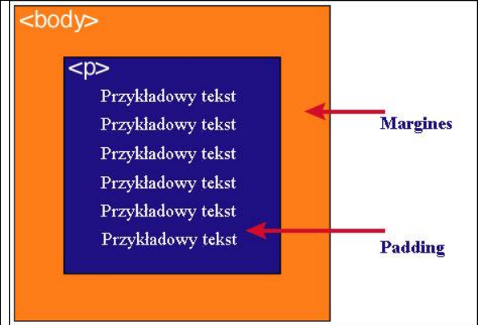

Model pudełkowy to kluczowy koncept CSS, który definiuje, jak elementy na stronie są wyświetlane w przeglądarce. Dotyczy on szczególnie elementów blokowych, takich jak paragrafy (< p>) czy cytaty (< blockquote>). Każdy z tych elementów jest traktowany jak prostokątna "ramka", której części składają się z zawartości (content), marginesów wewnętrznych (padding), obramowania (border) oraz marginesów zewnętrznych (margin).
| Zawartość | Opis |
| Kontent | to główna treść elementu, np. tekst lub obraz. |
| padding(marginesy wewnętrzne) | określa odstęp pomiędzy zawartością a obramowaniem elementu. |
| border(Obramowanie) | jest to granica wokół zawartości i paddingu, która może mieć styl i kolor. |
| margin(marginesy zewnętrzne) | – przestrzeń oddzielająca element od innych elementów na stronie. Nie ma koloru tła i zawsze jest przezroczysta. |
Uwaga 1
Zarówno padding, border, jak i margin mogą być ustawione na zero, co oznacza, że nie muszą być widoczne ani zajmować przestrzeni.
Uwaga 2
Tło elementu rozciąga się przez obszar zawartości, paddingu i obramowania, ale nie obejmuje marginesów zewnętrznych, które pozostają przezroczyste.

Model pudełkowy można łatwo przedstawić graficznie. Wyobraź sobie, że zawartość elementu jest otoczona warstwami – najpierw padding, potem obramowanie, a na końcu marginesy zewnętrzne.
Padding to wewnętrzny odstęp pomiędzy zawartością elementu a jego obramowaniem. W HTML może dotyczyć np. elementów takich jak < p > lub < div >. Margin to natomiast zewnętrzny odstęp, który oddziela element od innych na stronie.

Na rysunku różnice te są przedstawione wizualnie. Kolor niebieski wskazuje na padding, czyli przestrzeń wokół zawartości elementu (np. < p >). Z kolei margines, oznaczony kolorem pomarańczowym, pokazuje odległość tego elementu od brzegu strony, np. < body >.